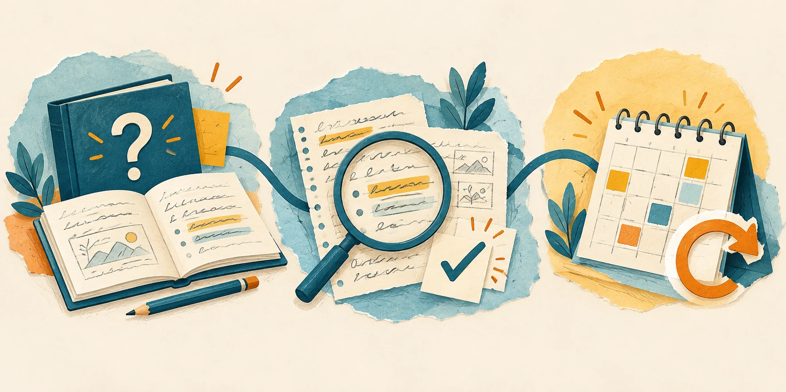

Leggere è un punto di partenza. Provare a spiegare ciò che abbiamo studiato, verificare gli errori e tornare sull’argomento in giorni diversi può rendere il ripasso più utile. Un percorso concreto da adattare a materia, età e obiettivi.

Dalle preferenze alle strategie
Nel primo capitolo abbiamo incontrato modi diversi di avvicinarci allo studio e l’importanza di riflettere su come apprendiamo. Ora facciamo un passo avanti: come possiamo scegliere e verificare una strategia?
Una precisazione aiuta a partire: preferire una mappa, un testo o una spiegazione orale non dimostra che impariamo meglio soltanto attraverso quel canale. La revisione di Pashler e colleghi non trovava prove adeguate per assegnare a ciascuno uno “stile” e abbinargli stabilmente l’insegnamento. È una conclusione sull’abbinamento, non un invito a ignorare differenze e bisogni individuali. Fonte: Pashler e colleghi, 2008.
Possiamo usare strumenti diversi, scegliendoli in base al compito. Per ripassare una regione, ad esempio, una carta geografica permette di osservare dove si trovano monti e fiumi; una spiegazione permette di ragionare sui loro rapporti con il clima. Poi serve chiedersi che cosa sappiamo ricostruire e spiegare.
💭 1. Richiamare: provare prima di guardare
Il recupero attivo consiste nel provare a richiamare un’informazione già studiata, anziché consultarla subito. Può essere una risposta a una domanda, una breve spiegazione o uno schema ricostruito con gli appunti coperti.
Una revisione sistematica di esperimenti in contesti scolastici e universitari ha riscontrato benefici del recupero attivo in diversi ambiti. I risultati non garantiscono lo stesso vantaggio a ogni studente: i contesti esaminati erano prevalentemente occidentali e le attività variavano. Fonte: Agarwal, Nunes e Blunt, 2021.
Prova con un paragrafo di storia: dopo averlo letto e chiarito, copri il testo e rispondi a tre domande. Che cosa è successo? Quali cause vengono descritte? Quali conseguenze? Non occorre riprodurre ogni frase: cerca una spiegazione corretta con parole tue.
Se non sai da dove cominciare, riapri il libro, chiarisci un punto e riparti con una domanda più piccola.
Questa attività è un’occasione di esercizio, non un’interrogazione con un voto.
🔎 2. Controllare: dare una direzione agli errori
Dopo il tentativo, confronta la risposta con il testo, una soluzione affidabile o la spiegazione dell’insegnante. Segna che cosa manca, che cosa è impreciso e che cosa richiede ancora una domanda.
In matematica puoi provare a svolgere un esercizio già affrontato, tenendo coperta la soluzione. Se ti blocchi, individua il passaggio: hai scelto una formula inadatta? Hai perso un segno? Non è chiaro il significato della richiesta? Scrivi una nota precisa, come “devo capire quando cambiare il segno”, invece di “non so fare matematica”.
È una proposta pratica: rendere visibile il punto da chiarire permette di organizzare il prossimo tentativo. Recuperare una definizione, inoltre, non basta per saperla applicare: affianca domande ed esercizi coerenti con ciò che devi imparare.
📅 3. Riprendere: distribuire il ripasso
La pratica distribuita consiste nel tornare sullo stesso materiale in momenti separati. Una meta-analisi sul ricordo di materiale verbale sostiene il valore della distribuzione dello studio e mostra che l’intervallo utile dipende anche da quanto a lungo si vuole ricordare. Non offre un calendario unico per tutte le materie. Fonte: Cepeda e colleghi, 2006.
Ecco un esempio organizzativo, non una sequenza prescritta dalla ricerca: studia un argomento oggi, riprendi alcune domande domani e torna sui punti difficili dopo qualche giorno. Adatta le distanze al tempo disponibile e a ciò che riesci a ricordare. Il calendario serve a creare nuove occasioni di lavoro, non a riempire tutte le ore libere.
Un piccolo esperimento per la prossima settimana
Scegli un argomento circoscritto e prepara tre domande. A ogni ripasso prova a rispondere, controlla e annota un punto da rivedere. Nel tentativo successivo osserva se sai rispondere con maggiore precisione e spiegare il perché.
Famiglie e insegnanti possono accompagnare l’attività con domande come “quale passaggio vuoi chiarire?” e “come possiamo controllarlo?”. Concordate una modalità sostenibile: una risposta orale, poche righe o uno schema. Mantieni gli strumenti di supporto previsti nel tuo percorso scolastico; la proposta non richiede di rinunciarvi.
Le indicazioni qui raccolte sono spunti educativi generali. Nelle fonti su recupero attivo e pratica distribuita sono stati consultati gli abstract, non i testi integrali: non ricaviamo indicazioni specifiche per DSA o ADHD, né promesse sui voti.
Quale argomento vorresti ripassare con questo metodo, e quale domanda useresti per cominciare?
🏷️ Fonti
- Pashler, McDaniel, Rohrer e Bjork (2008), Learning Styles: Concepts and Evidence.
- Agarwal, Nunes e Blunt (2021), Retrieval Practice Consistently Benefits Student Learning: a Systematic Review of Applied Research in Schools and Classrooms (abstract consultato).
- Cepeda e colleghi (2006), Distributed Practice in Verbal Recall Tasks: A Review and Quantitative Synthesis (abstract consultato).
Lascia un commento.
Non serve un account. Scegli un nickname che non sia già stato utilizzato nei commenti del sito.
I commenti saranno disponibili appena completata l’attivazione.